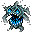

地下墓地 The Crypt
英語版 CrawlWiki の記事「The Crypt」(0.30 向け、2025-01-17 版)の翻訳です。原文の著者は編集履歴をご覧ください。
この記事は 0.30 の時点の内容で、最新の 0.34 とは違うところがあるかもしれません。
| 地下墓地は、太古の死者たちを納めた巨大な貯蔵庫だ。空気は冷たく悪臭を放ち、壁は冷たく湿っている。骨がいたるところに惜しげもなく散らばり、あらゆる物音が不穏に反響して、墓所の重苦しい静寂を破る。
この分岐は不自然なまでに静かで、音が遠くまでよく届く。 この分岐の入口は宝物庫の第2～3階層のどこかにある。 この分岐は3階層ある。 この分岐には太古の霊廟への入口がある。 |
| この階段は太古の地下墓地へと続いている。あいにく、そこに葬られたものすべてが、おとなしく死んだままでいる慎みを持ち合わせていたわけではない。 |
 地下墓地は 3 階層ある分岐で、入口は宝物庫:2〜3 にある。あらゆる種類のアンデッドがひしめいている。ゾットのルーンは置かれていないが、ミイラが守る太古の霊廟への入口があり、最下層には強力なアンデッドに守られた大量の財宝が眠っている。
地下墓地は 3 階層ある分岐で、入口は宝物庫:2〜3 にある。あらゆる種類のアンデッドがひしめいている。ゾットのルーンは置かれていないが、ミイラが守る太古の霊廟への入口があり、最下層には強力なアンデッドに守られた大量の財宝が眠っている。
構造
地下墓地は、息の詰まるような曲がりくねった通路と、広々とした大部屋でできている。壁はすべて掘れない石か金属の壁だ。
地下墓地はとても静かな場所でもあるので、物音がふだんより遠くまで届く。住人のほとんどは死んだように静かだが、こちらが武器を振るう音だけでも注意を引いてしまう。
地下墓地:3
地下墓地の第 3 階層には、必ず財宝のヴォールトがある。大きさはこぢんまりした部屋ひとつから、マップ全体に及ぶものまでさまざまだ。中にはかならずゲーム屈指の強力なアンデッドがいて、生きた敵やゴーレムがまじっていることも多い。
財宝ヴォールトの戦利品には、死霊術にちなんだものも含まれる。衰弱、吸血、苦痛のブランドが付いた武器、生命力保護の指輪、ネクロノミコン、死霊術の杖、あるいはそれらしい固定アーティファクトのどれかといったものだ。
戦略
地下墓地は寄らなくてもかまわない分岐で、終盤に経験値やアイテムがもっと欲しいときに挑めばいい。エクステンデッドに進むつもりなら、ふつうはパンデモニウムや地獄に入る前に片づける。
地下墓地にいるのはほとんどがアンデッドなので、神罰やアンデッドの解呪がほかより役に立つ。同じ理由で負のエネルギーや拷問を使う敵も多いので、rN+ を用意していこう。
次のモンスターにはとくに注意が要る。
- z
 太古の王者: 鉄塊の矢を撃ってくるうえ、攻撃力もそこそこある。加速していると、どんなキャラクターにも痛手を負わせてくる。
太古の王者: 鉄塊の矢を撃ってくるうえ、攻撃力もそこそこある。加速していると、どんなキャラクターにも痛手を負わせてくる。 - D
 骸骨ドラゴン: 攻撃力が高く、とてもしぶといアンデッド。単純だが手ごわい。
骸骨ドラゴン: 攻撃力が高く、とてもしぶといアンデッド。単純だが手ごわい。 - z
 呪いの頭蓋骨: 動きが速くACも高い頭蓋骨で、拷問や不死者の召喚を使ってくる。
呪いの頭蓋骨: 動きが速くACも高い頭蓋骨で、拷問や不死者の召喚を使ってくる。 - L
 太古のリッチとL
太古のリッチとL  恐怖のリッチ: 最上級の呪文の使い手。太古のリッチは呪文で莫大なダメージを与えてくるし、恐怖のリッチはこちらを麻痺させたり、危険な悪魔を呼び出したりする。
恐怖のリッチ: 最上級の呪文の使い手。太古のリッチは呪文で莫大なダメージを与えてくるし、恐怖のリッチはこちらを麻痺させたり、危険な悪魔を呼び出したりする。 - W
 幻想の戦士: 単体ではそれほど危険ではないが、こちらの意志力を半分にしてくる。そうなると、吸血鬼の騎士やリッチなどの呪術にかかりやすくなる。
幻想の戦士: 単体ではそれほど危険ではないが、こちらの意志力を半分にしてくる。そうなると、吸血鬼の騎士やリッチなどの呪術にかかりやすくなる。
役に立つ特性
モンスター
| W |
W |
3  魂を貪るもの |
2 |
| W |
W |
W |
W |
| n |
D |
z |
z |
| p |
p |
e |
z |
| V |
V |
V |
z |
| L |
L |
L |
z |

ヴォールトに配置されるもの
| ( |
9 |
9 |
z |
p |
A |
| M |
M |
M |
M |
M |
H |
ユニーク
| S |
d |
L |
@ |
| @ |
j |
V |
L |
| M |
R |
@ |
A |
| o |
Q |
9 |
D |
| a |
変更履歴
- 0.17 より前は、この分岐で生まれざる者に出会うことがあった。
- 0.15 より前は、地下墓地は 5 階層あった。0.15 で闇ドワーフの死の騎士が人間の死の騎士に置き換えられ、疫病の徘徊者が削除された。
- 0.13 より前は、地下墓地に出るモンスターの顔ぶれがまるで違っていた。ゾンビ、骸骨、骸骨の戦士が、ほかを大きく引き離していちばんよく出るモンスターだった。今よりもさらに静かでもあった。
| 分岐の一覧 |
|---|
| |
| 関連項目: ポータル |